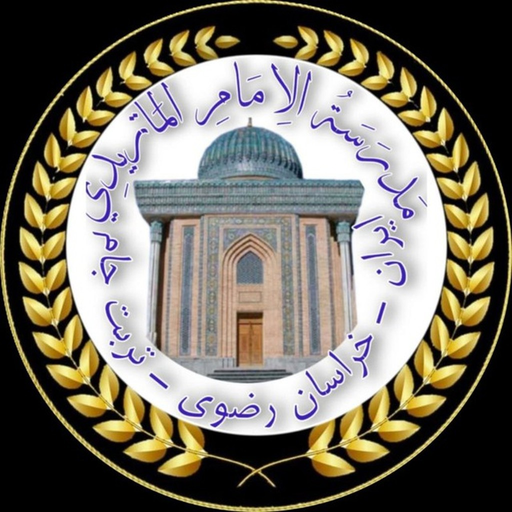

آکادمی ماتریدی
Maturidi Academy — Desktop
در حال اتصال به وباپ آکادمی…
اتصال اینترنت برقرار نیست. پس از اتصال، دوباره تلاش کنید.
You appear to be offline. Reconnect and retry.
نشانی وباپ برای این نسخهٔ دسکتاپ تنظیم نشده است. مدیر استقرار باید
نشانی واقعی وباپ production را در فایل
shell/config.js
(متغیر MATURIDI_WEB_URL) قرار دهد — پوسته بدون نشانی
معتبر، هیچ صفحهای را حدس نمیزند.
This desktop build is not configured yet: the deployment must set
MATURIDI_WEB_URL in shell/config.js to the
real production web origin (ADR-0023).